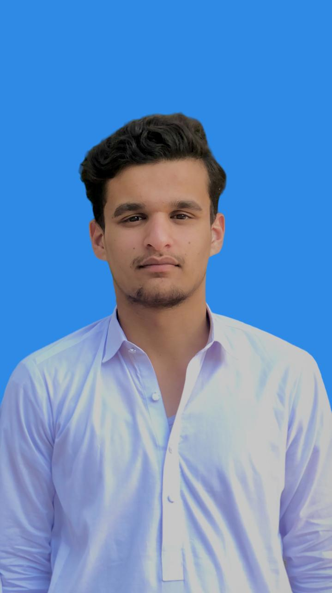

About Me
I am website developer currently doing intership at GROWURK in Website Development .am also working as wordpress developer from 2 years as a freelacer but complete only 2 projects.I am specliazed in creating clean responsive websites that deliver real results.I completed 2 projects as a freelancer where I handled everything from theme customization to plugin integrationand performance optimization.My focus is on building user friendly interfaces with modern design principles .I enjoy turning complex problems into simple,beautiful solutions whether its an e commerce store or a portfolio website,I make sure every website is fast,secure and SEO ready. Lets build something amazing together.

Skills
- Wordpress
- Html
- CSS
- Python
- Canva
- MS Office
- Prsentation design